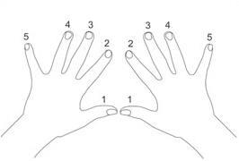

piano practice - fingering
You've got a lot of notes to play. Well, which fingers do you use when ??Sorry, there are no hard and fast rules for this.
In some sheet music, little numbers next to the notes indicate fingering:  But this is pretty rare. Sometimes the given fingering won't work for your fingers.
You'll have to work it out on your own most the time. This is your first job when you pick up a new song. Write it down on the notation. Change it if you find a better way. Especially after a good night's sleep
Watch the min and max range of notes for the section you're on, and figure out how you can make your fingers cover them best.
For chord after chord after chord type sections, you'll probably be moving hand positions.
Otherwise, try to keep your hands somewhat stationary so you'll know what notes you have under your fingers.
If possible, try to keep your thumb or your pinky anchoring your hand.
Tips
(from "Kreisler" of pianoworld.com's forums)
Always figure fingering one hand at a time - or you'll drive yourself nuts.
Determine fingering before practicing.
You want your brain and fingers to remember one fingering.
Not a couple variations swapped in and out randomly !!
Know what notes are under your fingers so you don't have to look down
That's why we have black keys.
So the hand can always feel where it is.
Don't finger the easy spots. Clearer is better.
Do you really need to write that 1 or 5?
If the finger doesn't move, don't mark it on the 2nd note.
just look back across the line.
For chords, scales and arpeggios try to use standard fingering.
If possible, anchor your hand via the thumb or pinky and
keep your fingers on successive keys of the scale to match the music.
So you can feel intervals.
When extending to reach a "way out there" note, use either the fingers or
else the thumb. Then move it back so you always know what it's covering.
Try to move either the thumb or the fingers as a group.
You don't want to have to readjust gaps between the 4 fingers.
Move your whole hand to a new position rather than stretching fingers.
But also try to minimize hand hops.
Try to use your strongest fingers for important notes:
First thumb, then index, then middle.
Try to minimize thumbs and pinkies on black notes.
Since they're short, they'll squish the rest of your fingers up too far.
Practice thumb under (and 2nd or 3rd over the thumb) for smooth legato
melodies.
For very very fast melodies, you'll need to use what's called thumb over,
but really just means "scoot your whole hand".
Pay special attention to smooth transitions between passages of the music.
Sometimes awkward fingering in an earlier passage "sets up" the start of the
next passage.
Ask your piano teacher how to do it !!
Lots of rules. None set in stone. If it's smooth, relaxed, and sounds good, it is good.
next: the daily routine home